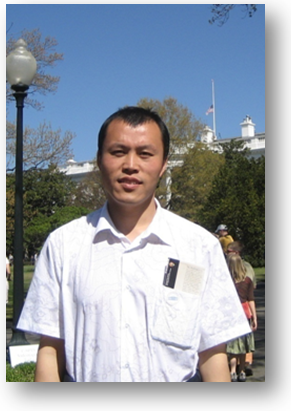

|  |
Bing Sun
School of Mathematics and Statistics |
| I am Professor of Mathematical Control Theory, Department of Computational and
Systems Science, School of Mathematics and Statistics,
Beijing Institute of Technology, Beijing, P.R. China.
I do research in the field of Applied Mathematics. And my research interests include Control Theory of Distributed Parameter Systems, Optimal Control Theory of Differential Equations and Its Applications to Dynamic Systems of Both
Technical and Biologic Origin, Numerical Solutions of Optimal Feedback Control, Necessary Optimality Conditions for Optimal Control Problems.
Follow me on Research Gate, Google Scholar and Homepage@BIT. |
2005, Ph.D, Chinese Academy of Sciences, Beijing, P.R. China.
Operational Research and Control Theory
For more information